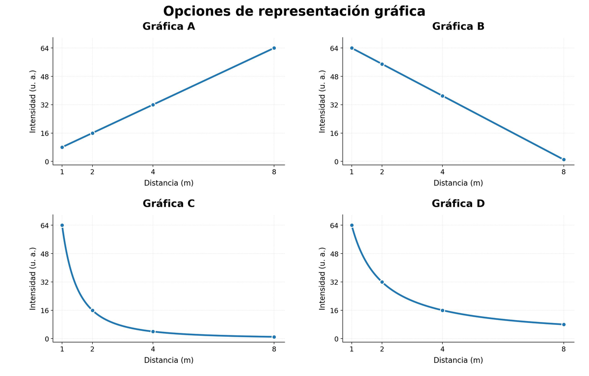
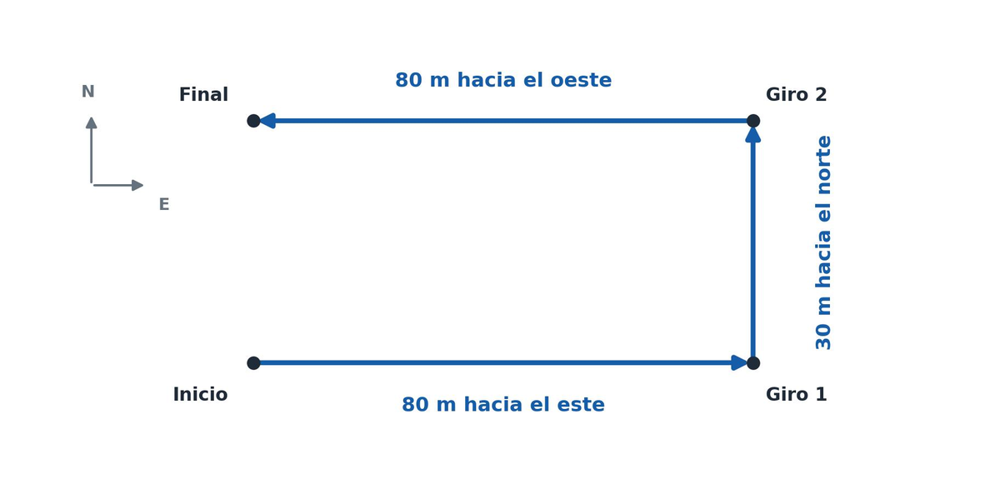
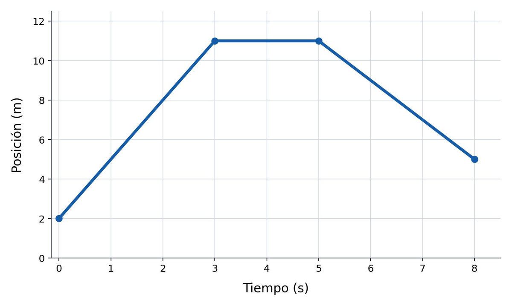
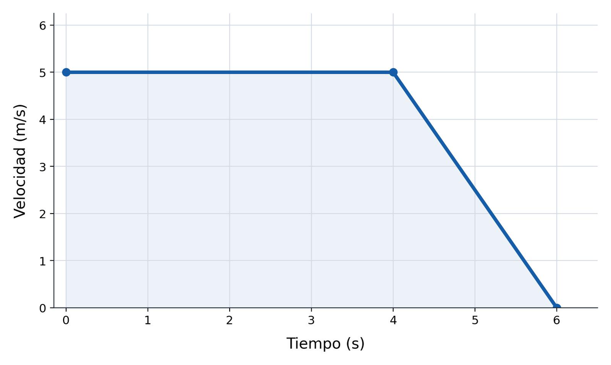
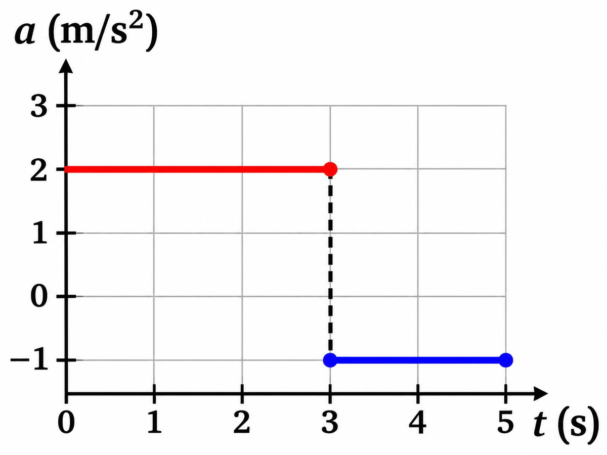
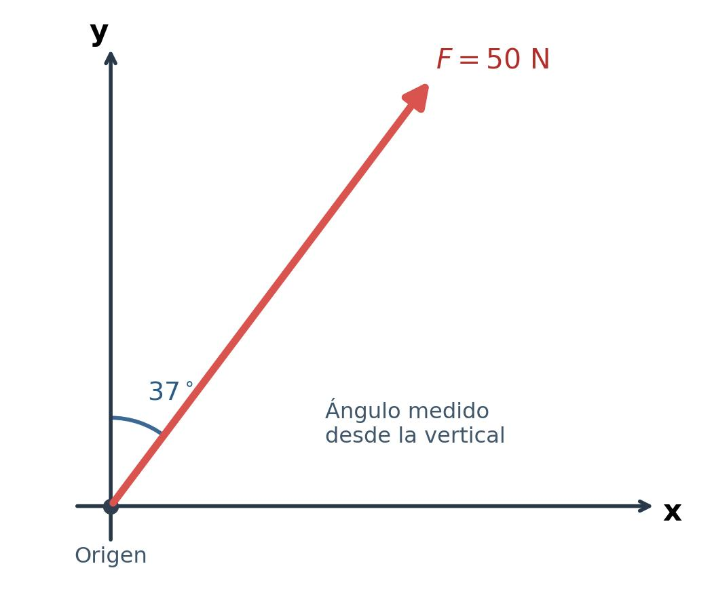
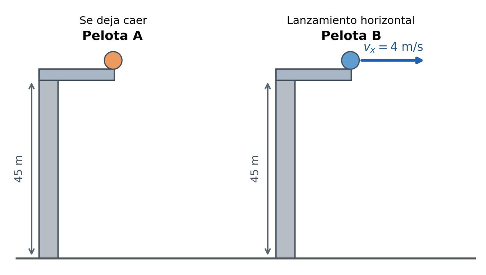
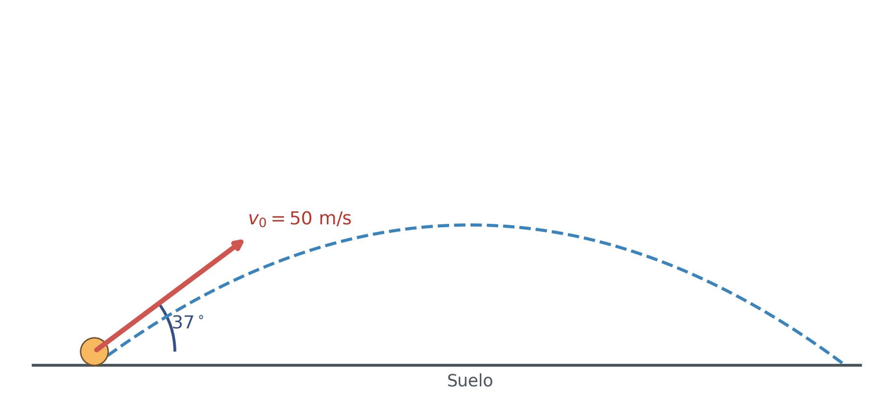

- Abre una sección, lee el concepto y las fórmulas.
- Pulsa Siguiente paso en cada ejemplo resuelto (los ejemplos son distintos a los de tu evaluación).
- Juega con los simuladores moviendo los controles.
- Practica con números que cambian cada vez y marca la sección como estudiada.
- Al final, haz el autoexamen con preguntas nuevas.
Mapa: pregunta del examen → sección de la guía
| Pregunta(s) | Tema | Sección |
|---|---|---|
| 1 y 3 | Método científico, hipótesis y variables | 1 |
| 2 | Conversión de unidades y notación científica | 2 |
| 4 y 5 | Relación entre magnitudes y gráficas de datos | 3 |
| 6 y 7 | Distancia, desplazamiento, rapidez y velocidad media | 4 |
| 8 y 9 | MRU y gráfica posición-tiempo | 5 |
| 10 y 14 | Gráficas velocidad-tiempo y aceleración-tiempo (áreas) | 6 |
| 11, 12, 13 (y 14) | MRUV: aceleración, tiempo de frenado, posición | 7 |
| 15 | Caída libre | 8 |
| 16 y 17 | Vectores: suma y descomposición | 9 |
| 18 | Lanzamiento horizontal | 10 |
| 19 y 20 | Movimiento parabólico | 11 |
Cada recuadro es un tema y cada flecha dice cómo uno ayuda a entender el siguiente. Pulsa el punto de una flecha para leer la relación; pulsa un tema para ir a su sección.
Sigue este orden: cada tema usa lo del anterior. Las casillas se sincronizan con tu progreso.
- Primero: plantear preguntas, variables e hipótesis; todo experimento empieza ahí.
- Lo que mides necesita unidades; sin ellas no puedes comparar.
- Con datos en unidades coherentes, ves cómo se relacionan dos magnitudes.
- Aplicas esas ideas a distancia, tiempo y velocidad.
- Velocidad constante: el movimiento más sencillo y su gráfica x–t.
- Qué pasa cuando la velocidad cambia: pendiente y áreas.
- Aceleración constante: las fórmulas que salen de esas gráficas.
- Un MRUV con a = g; prepara el eje vertical de los lanzamientos.
- Componentes x e y: la herramienta para movimientos en dos dimensiones.
- Une MRU (eje x) y caída libre (eje y).
- Reúne todo lo anterior; después, haz el autoexamen.
1. Método científico, hipótesis y variables
- Sigue el camino: pregunta, hipótesis, experimento y conclusión.
- Independiente: la que tú cambias. Dependiente: la que mides. Controladas: las que mantienes iguales.
- Una hipótesis se puede comprobar y suele decir «Si cambio…, entonces… cambiará…».
Los científicos repiten sus mediciones varias veces para que un resultado raro no los engañe.
Concepto
Un experimento responde una pregunta de investigación. La hipótesis es una respuesta posible que se puede comprobar, y suele escribirse así: "Si cambio ___, entonces ___ cambiará de esta manera".
| Variable | ¿Qué es? |
|---|---|
| Independiente | Lo que el investigador cambia a propósito. |
| Dependiente | Lo que se mide; es el resultado que puede cambiar. |
| Controladas | Lo que se mantiene igual para que la comparación sea justa. |
2. Conversión de unidades y notación científica
- Para convertir, multiplica por factores que valen 1 (por ejemplo, 1000 m por cada 1 km).
- Notación científica: un número entre 1 y 10 multiplicado por una potencia de 10.
- Si pasas a una unidad más pequeña, el número crece; si pasas a una más grande, disminuye.
En 1999 la sonda Mars Climate Orbiter se perdió en parte porque dos equipos usaron unidades distintas (libras-fuerza y newtons).
Concepto
La notación científica escribe un número como $a\times10^{n}$ con $1\le a<10$ y $n$ entero. Si el número es grande, $n$ es positivo; si es menor que 1, $n$ es negativo.
| Prefijo | Equivalencia |
|---|---|
| 1 km | $10^{3}$ m |
| 1 cm | $10^{-2}$ m |
| 1 mm | $10^{-3}$ m |
| 1 kg | $10^{3}$ g |
| 1 h | 3600 s |
| 1 min | 60 s |
Velocidades: $\text{km/h}\to\text{m/s}$: divide entre 3,6. $\text{m/s}\to\text{km/h}$: multiplica por 3,6.
3. Relación entre magnitudes y gráficas de datos
- Directa: y/x es constante y la gráfica es una recta desde el origen.
- Calcula y/x, x·y y x²·y: el que siempre da lo mismo revela la relación.
- La curva o recta debe pasar por todos los puntos de la tabla.
Johannes Kepler descubrió que, en los planetas, el cuadrado del periodo orbital es proporcional al cubo de la distancia media al Sol (T² ∝ r³).
Tipos de relación
| Relación | Cómo reconocerla en una tabla | Forma de la gráfica |
|---|---|---|
| Directa (lineal que pasa por el origen) | $y/x$ es constante | Recta creciente desde el origen |
| Lineal con cambio constante | $y$ cambia lo mismo cuando $x$ cambia lo mismo | Recta (puede ser decreciente) |
| Inversa | $x\cdot y$ es constante | Curva que baja (hipérbola) |
| Inversa al cuadrado | $x^{2}\cdot y$ es constante | Curva que baja más rápido |
Imágenes de tu evaluación

4. Distancia, desplazamiento, rapidez media y velocidad media
- Distancia: lo que recorres en total (escalar). Desplazamiento: flecha recta de inicio a fin (vector).
- Rapidez media = distancia ÷ tiempo.
- Velocidad media = desplazamiento ÷ tiempo.
En barcos y aviones la rapidez se mide en nudos: 1 nudo es 1 milla náutica por hora, unos 1,852 km/h.
Conceptos
- Distancia recorrida: longitud total del camino. Es escalar (solo número y unidad); nunca disminuye.
- Desplazamiento: vector que va del punto inicial al final, en línea recta. Tiene magnitud y dirección. Si vuelves al inicio, es cero.
Imágenes de tu evaluación

5. MRU y gráfica posición-tiempo
- MRU: línea recta, velocidad constante y aceleración cero.
- Posición: x = x₀ + v·t.
- En la gráfica x-t es una recta y su pendiente es la velocidad.
En el vacío la luz viaja a una rapidez constante de unos 299 792 km por segundo.
Concepto
En el movimiento rectilíneo uniforme (MRU) el móvil va en línea recta con velocidad constante y aceleración cero.
$$x=x_0+v\,t\qquad v=\frac{\Delta x}{\Delta t}$$Para saber si una tabla es MRU: calcula $\Delta x/\Delta t$ en cada intervalo; si es siempre el mismo número, es MRU y ese número es la velocidad (¡fíjate en el intervalo de tiempo, no solo en cuánto sube la posición!).
Leer una gráfica $x$–$t$
| Se ve así | Significa |
|---|---|
| Línea inclinada hacia arriba | Se mueve en sentido positivo (v > 0) |
| Línea horizontal | Reposo (v = 0) |
| Línea inclinada hacia abajo | Se mueve en sentido negativo (v < 0) |
| Más inclinada | Mayor rapidez |
| Curva | La velocidad cambia (hay aceleración) |
Imágenes de tu evaluación

6. Gráficas velocidad-tiempo y aceleración-tiempo (áreas)
- La pendiente de la gráfica v-t es la aceleración.
- El área bajo v-t es el desplazamiento.
- El área con signo bajo a-t es el cambio de velocidad.
La idea de «área bajo una curva» es la base del cálculo integral, desarrollado en el siglo XVII por Newton y Leibniz.
Concepto
- En una gráfica v–t: el área bajo la curva es el desplazamiento; la pendiente es la aceleración.
- En una gráfica a–t: el área con signo es el cambio de velocidad $\Delta v$. Área bajo el eje = $\Delta v$ negativo.
| Figura | Área |
|---|---|
| Rectángulo | $base\cdot altura$ |
| Triángulo | $\tfrac12\,base\cdot altura$ |
| Trapecio | $\tfrac12(B+b)\,h$ |
Imágenes de tu evaluación


7. MRUV: movimiento con aceleración constante
- MRUV: la velocidad cambia lo mismo en cada segundo (aceleración constante).
- v = v₀ + a·t y x = x₀ + v₀·t + ½·a·t².
- Si frena, la aceleración tiene signo contrario al de la velocidad.
Un carro que pasa de 0 a 100 km/h en 10 s tiene una aceleración media de unos 2,8 m/s².
Concepto
En el MRUV la velocidad cambia la misma cantidad en cada segundo: la aceleración es constante y distinta de cero. Esto ocurre tanto si el móvil acelera como si frena; lo que cambia es el signo de $a$ respecto al sentido de la velocidad.
$$v_f=v_0+a\,t\qquad x=x_0+v_0t+\tfrac12 a t^{2}\qquad v_f^{2}=v_0^{2}+2a\,\Delta x$$8. Caída libre
- Caída libre: solo actúa la gravedad, g ≈ 9,8 m/s² (≈ 10 en los ejercicios).
- Es un MRUV con a = g hacia abajo.
- Si parte del reposo: h = ½·g·t² y v = g·t.
Galileo usaba planos inclinados para «diluir» la gravedad y medir tiempos con relojes de agua.
Concepto
En caída libre (sin resistencia del aire) todos los cuerpos aceleran hacia abajo con la misma $g\approx9{,}8\text{ m/s}^{2}$ (en los problemas suele usarse 10). La masa no aparece en las fórmulas del movimiento.
$$h=\tfrac12 g t^{2}\qquad v=g\,t\qquad t=\sqrt{\frac{2h}{g}}$$9. Vectores: suma y descomposición
- Un vector tiene magnitud, dirección y sentido.
- Suma por componentes: Rₓ = Aₓ + Bₓ y Rᵧ = Aᵧ + Bᵧ.
- Descomposición: Aₓ = A·cos θ y Aᵧ = A·sen θ (θ desde la horizontal).
La velocidad de un avión respecto al suelo resulta de sumar su velocidad respecto al aire y la velocidad del viento.
Suma por componentes
Un vector se escribe $\vec A=(A_x,A_y)$. Para sumar, se suma componente con componente (respetando signos):
$$\vec R=\vec A+\vec B=(A_x+B_x,\;A_y+B_y)\qquad |\vec R|=\sqrt{R_x^{2}+R_y^{2}}$$Descomposición
Una fuerza $F$ con ángulo $\theta$ medido desde la horizontal:
$$F_x=F\cos\theta\qquad F_y=F\sin\theta$$Imágenes de tu evaluación

10. Lanzamiento horizontal
- Horizontal: MRU (vₓ constante). Vertical: caída libre.
- El tiempo de vuelo depende de la altura: t = √(2h/g).
- Alcance: R = vₓ·t.
Los clavadistas de La Quebrada, en Acapulco, saltan desde plataformas de unos 35 m de altura.
Concepto
El movimiento se separa en dos independientes:
- Horizontal: MRU con $v_x$ constante, $x=v_x t$.
- Vertical: caída libre desde el reposo, $h=\tfrac12gt^{2}$.
Imágenes de tu evaluación

11. Movimiento parabólico
- Horizontal: MRU. Vertical: sube, frena, se detiene arriba y baja con g.
- Tiempo de subida tₛ = v₀ᵧ/g y vuelo total T = 2tₛ (mismo nivel).
- Altura máxima H = v₀ᵧ²/(2g) y alcance R = vₓ·T.
Sin resistencia del aire, la trayectoria de cualquier proyectil es una parábola; Galileo fue de los primeros en demostrarlo.
Concepto
Un proyectil lanzado con velocidad $v_0$ y ángulo $\theta$ tiene dos componentes: $v_{0x}$ (constante) y $v_{0y}$ (cambia por la gravedad).
$$v_{0x}=v_0\cos\theta\quad v_{0y}=v_0\sin\theta\quad t_s=\frac{v_{0y}}{g}\quad T=2t_s\quad H=\frac{v_{0y}^{2}}{2g}\quad R=v_{0x}\,T$$Imágenes de tu evaluación

Autoexamen final (preguntas nuevas)
14 preguntas parecidas en estilo, con números diferentes. Responde todas y pulsa Calificar. Cada vez que repitas, cambian los números.